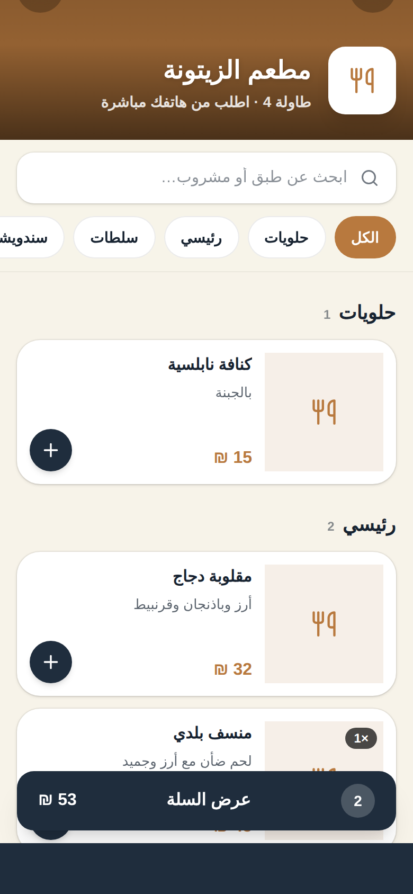
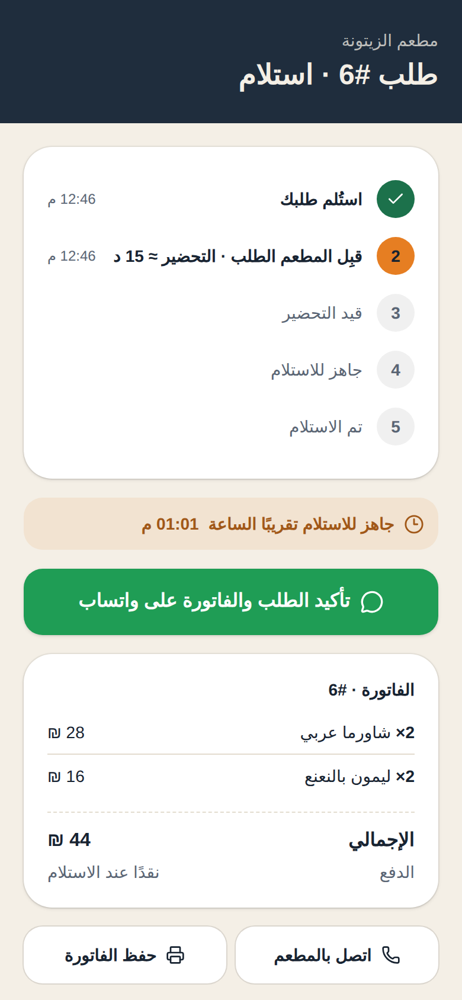

L1زبون يرفع إيده: «لو سمحت!»… وما حدا منتبهلقطة متوسطة · 3 ث
كم مرة
استنّيت
النادل؟
L2النادل يكتب الطلب على ورقةقريبة على الإيد · 1.6 ث
L3ورقة الطلب مرمية على طاولة المطبخقريبة · 1.6 ث
L4الزبون يطّلع على الساعة ويتأففقريبة · 1.8 ث
ورقة…
انتظار…
طلب ضايع
L6الزبون يمسح كود QR عن الطاولة بجوالهمن فوق الكتف · 2.5 ث

تم إرسال طلبكوصل المطبخ · مطعم الزيتونة
1امسح واطلب من جوالك
طلب جديد #7مقلوبة دجاج × 2
L8الطبّاخ يضغط «ابدأ التحضير» على الشاشةجانبية · 3.5 ث
2يوصل المطبخ فورًا

3
4
طلبك جاهز!تفضّل استلمه
L11النادل يقدّم الطبق… والزبون مبسوطمتوسطة · 3.5 ث
3تابع طلبك لحظة بلحظة
بدون تطبيق
الزبون يمسح الكود ويطلب من المتصفح
يكمل لو انقطع النت
والتغييرات بتتزامن لحالها
بلا عمولة
اشتراك ثابت يبدأ من 15 دولار
L13أحمد: نظرة للكاميرا وابتسامةقريبة · 1.2 ث
L14علي: نظرة للكاميرا وابتسامةقريبة · 1.2 ث
L15عمار: نظرة للكاميرا وابتسامةقريبة · 1.2 ث
L16سجى: نظرة للكاميرا وابتسامةقريبة · 1.2 ث
L17رنين: نظرة للكاميرا وابتسامةقريبة · 1.2 ث
أ كأحمد الكحلوتقائد الفريق
ع سعلي أبو سويلممطوّر الخادم
ع ععمار العرعيرمطوّر الخادم
س سسجى ساق اللهمطوّرة الواجهات
ر ررنين ريانمطوّرة الواجهات
L18الفريق كامل، وأحمد يحكي جملته للكاميرامتوسطة واسعة · 4 ث
الإطلاق التجريبي
جرّبه مجانًا
14 يومًا
منيو QR · مطبخ لحظي · بلا عمولة
الرابط في البايو
كل يوم بالمطاعم: انتظار، ورقة، وطلبات بتضيع
عشان هيك عملنا menuPilot
الزبون بيمسح الكود، وبيطلب من جواله
بدون ما ينزّل أي تطبيق
والطلب بيوصل المطبخ فورًا
وبيتابع طلبه لحظة بلحظة
إحنا فريق menuPilot، والنسخة التجريبية صارت متاحة